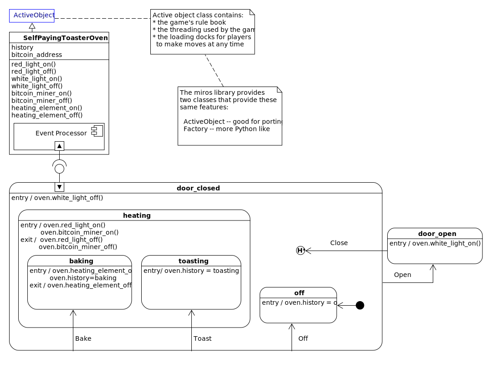
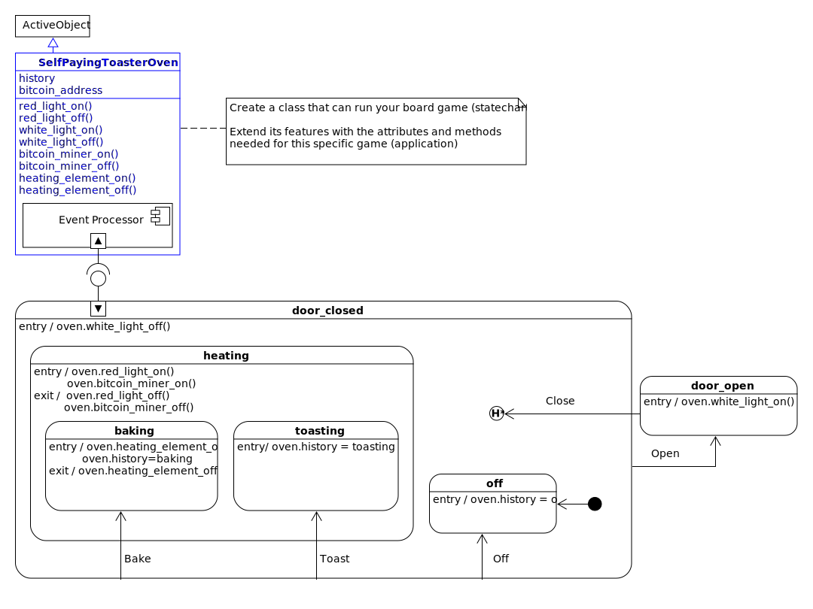
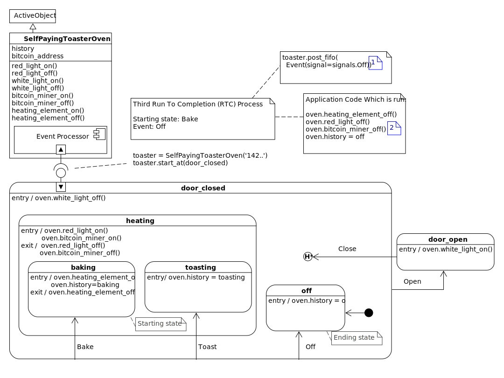
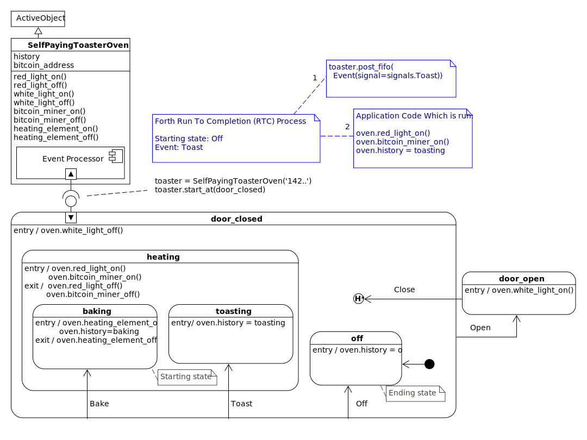
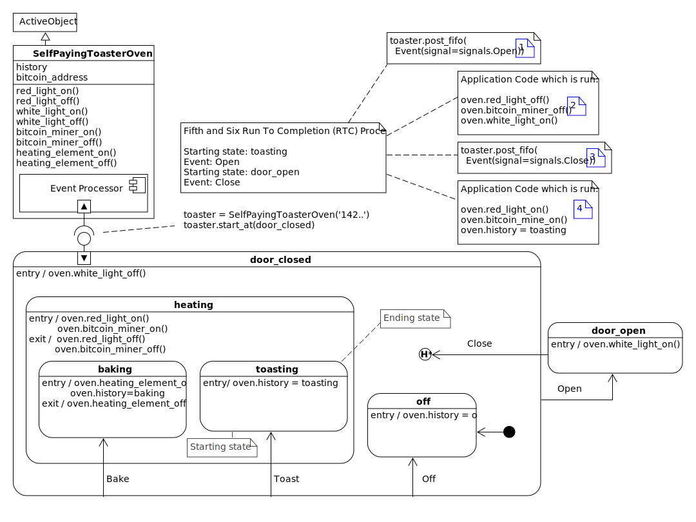
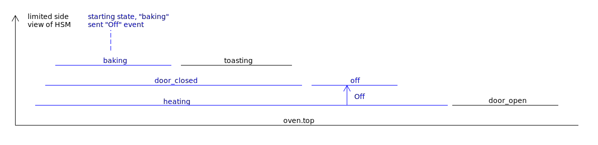
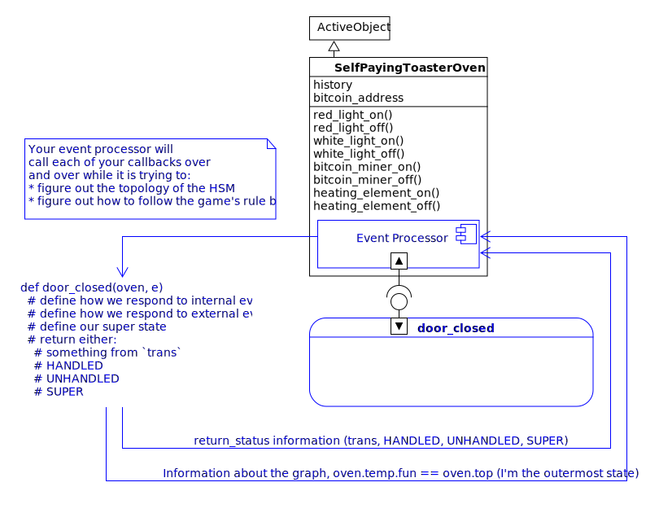
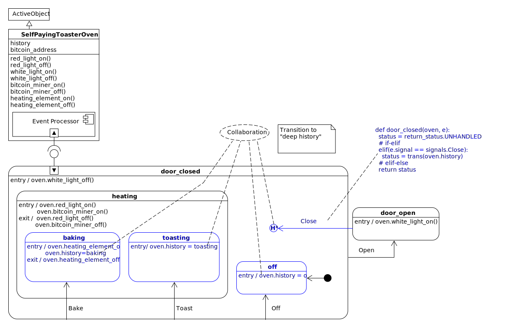

This library is intended for three different audiences, so I have constructed
three separate quick start sections:
Quick Start for Newbies
This introduction to statecharts using miros will be done in stages:
- analogy: to link something you know already to something new
- design and diagram: learn by drawing a statechart
- mechanics: to understand the dynamics of a reactive program.
- code: translate your design into something a computer can run.
- instrumentation: how to debug your code
- testing: how to write tests
An Analogy
If you don’t know what a statechart is, think of it as a kind of board game that
you can use to solve problems.
This board game has a board with a picture on it, some marbles that the players
can place and then roll around the board in accordance to the game’s rulebook.
It has a game piece that all of the members can move once it is their turn to
play. The players don’t move the game piece directly, but they move it by having
their marbles interact with the board. To do this, your board game would have
grooves for the marbles to roll in. If one player moved the game piece
on their turn, the next player will start their turn at this new position.
As the board game designer, you would have control over the drawing on the
board, and you would design some of the marbles that are used by the players,
but you wouldn’t control the rulebook or a player’s specific behaviour, what fun
would that be?
The players of your game could be people, touching an external user interface.
At the moment they press a key, an electrical signal would be sent into your
computer and then turned into a software abstraction of the key-press event that
could affect your board game. But a player doesn’t have to be a person; it could
be a countdown timer that fires an event every 3 seconds, it could be the stock
market, it could be the weather. A player in this metaphor is just something in
the outside world that can trigger the events.
To distinguish one event from another event, we will call them by different
names: signal names. Sometimes an event carries additional information, let’s
call this a payload. Going back to our metaphor, think of an event as a marble.
A player would build a marble and put it on the board when it was their turn to
play the game. Every marble would have a signal name painted on it, and
sometimes, deep within the marble would be a payload.
The player would place their marble on the board at the current location of the
game piece, let go of it and watch it roll. As it rolled on the board, it might
trigger software that you have written into that marble’s groove. It might
trigger additional marbles to pop out of the board and roll in turn, but
eventually, the action would stop, and the common game piece would be moved to
its new position, and the next player would get to play.
Every game has a rule book. In our case, the rulebook is called the Harel
Formalism. These rules govern how the marble can move on the board and how the
game piece is shifted in response.
The statechart board game also has rules about when a player gets to play. If
one player really needs to put a marble on the board while another is playing,
it is OK. She will just put it into a loading dock. The statechart board game
will only let one player play out their marble on the board at a time; this rule
is called run to completion (RTC). When a player’s marble has finished moving
around the board, our board game will check it’s loading dock to see if another
marble is waiting within it.
The loading dock is a python deque. The thing that will load the marble onto the
board when the game has finished processing the last player’s marble is a python
thread.
So what does this board game look like? Well, it looks kind of like a bunch of
rounded rectangles connected with arrows. The arrows have signal names painted
on them to describe paths that certain marbles can follow and the rounded
rectangles are called states.
All the states have names, and a state can be within another state. As the
different players play the game, the common piece is moved around the board,
coming to rest within one of the states. This is called the resting state.
The rules are pretty straightforward, but who wants to read a rulebook anyway?
The players certainly don’t. So, you as the board game designer and the board
game itself must know the rules. The board game’s software that applies the
rules to the marbles on the board is called the event processor. It is based
upon the algorithm invented by Dr. Miro Samek.
So how is this useful? Well, your game has software on its game board that can
run when a marble rolls over it. You can connect this software to the output of
your computer; so you can control things in the outside world. Your board game,
statechart, could be used to control a trading strategy, it could be used to
control the massive doors over a stadium, automatically reacting to changes to
weather forecasts. You could build a sprinkler system for your garden that
checks weather and soil conditions and will turn on when the plants need it or
if the garden is being raided by deer.
Getting down to brass tacks, what do we do now? Well, I have to show you how to
draw a board game; I have to show you how to draw a statechart. We will use UML.
I have to show you how to connect your board game to its automatic rulebook: the
event processor. I have to show you how to create your custom marbles, the
events and their payloads and how to send these to the board game so that you
can connect outside things into the events to which your statechart will react
too.
Once you know how to draw the pictures, you will need to know how to translate
this into code. Lastly, I will show you how to see if your statechart is
working; so that it can give you feedback about what it is doing. You can use
this feedback to both troubleshoot your design and to describe how it works to
others.
Note
If the diagram is too small, click on it to open it’s pdf
Design: A Self Paying Toaster Oven
So now I will design a board game that is easy to understand.
Let’s build a toaster oven that pays for itself, here is its specification:
- It will contain a bitcoin miner that runs hot enough to “toast” things.
- It will also have a heating element that can “bake” things.
- While toasting or baking, the inside of the toaster oven should glow red.
- When the door is closed, and the oven is not heating, no light should be on.
- When the door is opened, the heating should stop.
- When the door is opened, a white light should turn on.
- When the door is closed after it has being opened, the oven should continue
what it was doing before the door was opened.
- The bitcoin miner should survive very high temperatures.
Note
The name “Self Paying Toaster Oven” is a marketing ploy. A better name for
our product should be called the “Toaster Oven Lottery Ticket”, since it is
very unlikely our little bitcoin miner will succeed at mining a bitcoin.
Here is a statechart picture (board game) that meets these specifications:
Let’s break the board game image into its parts, from the top down:

The top of the diagram, highlighted in blue, describes the class that we want to use from the miros library. This
class will provide our game’s rulebook, the thread which our game will run in and
deques needed for our players to load their marbles.

We inherit from the ActiveObject to make a new class called
SelfPayingToasterOven. We put all of the worker-methods and the attributes,
needed by our specific board game inside of this derived class.
In the diagram above, the hierarchical state machine (HSM) is highlighted in
blue. This specific type of state machine is called a hierarchical state
machine, because it has states within states, making a hierarchical structure.
We will talk about the benefits of this shortly.
The miros package uses the HSM as a specification for behaviour. The state
machine doesn’t keep any information about what happens when your program
interacts with it. All of that information is kept within the object that uses
it. Because of this, a state machine can be used by many different
processes at the same time.
The icons highlighted blue in the above diagram represent the attachment point
between our toaster object and it’s state machine. Using our game metaphor,
think of this attachment point as a transparent plastic sheet that our toaster
puts over the game board. The event processor can write information onto this
sheet so that the game can keep track of its state without marking up the game
board directly.
The game is started where the attachment point is made, in the above example it
is like writing:
- construct an object from the class containing the event processor
(SelfPayingToasterOven)
- place a transparent plastic sheet down over the board game (our HSM)
- on the sheet, use a marker to note that the beginning position is the
door_closed
state.
- begin the game
Note
This attachment point is a useful fiction, but if you dig into the code, the
statemachine is actually a set of functions that reference one another. These
functions have two arguments, a handle to your specific
object and an event. These functions call your code
and call other functions in accordance to the rulebook of the game. A state
machine’s function doesn’t have it’s own memory, it uses the memory of the
object provided as it’s first argument. We won’t get into the details of this
yet, but know that your statemachine functions are actually the thing from
which the picture emerges.
Before I start talking about the dynamics of our game, let’s clear up some
terminology:
A statechart is a state machine operating within a thread, which has access to
information about its previous state. It has queues that can be used to store up
events (marbles played by players who don’t want to wait for their turn to
play).
Mechanics: The Game’s Dynamics
Let’s start the game:
# build a self paying toaster oven with a working bitcoin address
toaster = SelfPayingToasterOven('142x5ZhQEMk5LLjXGZeiTBWpv2oxQpfaHJ')
toaster.start_at(door_closed)
This will cause the game dynamics to turn on; the event processor starts rolling
marbles onto the board.
The start_at call will cause the game to enter the door_closed
state (1). As a result, the event processor will roll an entry marble onto the
board. This is caught by the entry handler of the door_closed state, calling
the white_light_off() method of the toaster (2). Now the game is in the
door_closed region of the diagram.
The event processor rolls an init marble onto the board, and this is caught by
the black dot within the door_closed region (3).
Note
The black dots with connected arrows are called “init pseudostates” in UML.
Think of them as, “What do I do when I land in this region?”. From now on I’ll
call these block dots, init icons.
The marble follows the groove into the off state. Since the
off state was entered the event processor rolls an entry marble to it. Its
entry handler runs the oven.history=off code in the context of the toaster
object (4).
At this point, the play is over, because the event processor has nothing left to
do. Another way of saying this is that the run to completion process (RTC) is
finished. The off state is marked onto the transparent plastic sheet as the
starting state for the next play of the game.
Since there is nothing left to do, the statechart thread looks to see if there
is a marble in it’s loading dock. The marble might have been played during the
last RTC process by another player.
Now suppose that while the game was running its startup code, someone pressed
the Bake button on the outside of our toaster, in code this would look like
this:
toaster.post_fifo(Event(signal=signals.Bake))
Here is what would happen:
The event processor would begin its work by checking to see if the off
state knew what to do with a Bake marble. The off state doesn’t know,
so the event processor would roll the marble outward on the board to the next most
outer state: door_closed, and ask it if it knows what to do with the
Bake marble.
The door_closed state has a named groove called Bake, so it knows what
to do with the Bake marble (1). The bake groove is trying to dump its marble
from the door_closed state into the baking state, but before the event
processor can do this, it must exit out of the off state.
So the event processor gives itself a sub-goal to transition from off to
baking. To begin this work it marks an S on the board over the off
state and marks a T on the board on the door_closed state. S stands for
source and T stands for target. Then it figures out how to transition from the
S to the T:
- it needs to exit the
off state.
To exit the off state it rolls an exit marble to the off state handler.
There isn’t one so nothing happens (2).
Now the event processor is in the door_closed state. It’s new target is the
baking state. So it marks an S on door_closed and a “T” on
baking_state. Then it makes a list of the work required to transition
from “S” to “T”:
- enter the
heating state, then
- enter the
baking state.
To do this, it rolls an entry marble to the heating state, which is caught
by its handler and the oven.red_light_on() is run, then the
oven.bitcoin_miner_on() is run (3). Then the event processor rolls an entry
marble to the baking state. This causes our program to run
oven.heating_element_on() then oven.history = baking (4).
The event processor is now in a new region, the baking state region. It
looks for an init icon, and it’s groove (a black dot with an arrow), but there
isn’t any, so it stops searching for work to do (5).
It is at this point that the second RTC process is completed. So the event
processor marks baking as the next starting point for the game and passes
control back to the statechart’s thread so it can check it’s loading dock for
player marbles.
We just learned about one of the benefits of having an HSM. We get automatic
grooves. The off state didn’t have to be explicitly connected to the
baking state. The Bake marble rolled outward till the event processor found
something that knew what to do with it. This means in our game metaphor we
should think of the inner states as being higher off the ground than the outer
states; this way it becomes easy to imagine what the marbles do. If they aren’t
explicitly handled with a named arrow from the state that was rolled the marble,
they fall outward until they are.
Guess what happens when a marble isn’t handled by an outer state? That’s right,
it rolls off the outer edge, is ignored, and no state transition occurs (only
costing us a few wasted cycles).
Now let’s do something perilous; let’s turn off the oven. Here is what
would happen if you were baking and you issued an Off event:
toaster.post_fifo(Event(signal=signals.Off))

Here is what would happen:
- The
Off event is sent to the event processor
- Any code on the Off-arrow would run: none
- The exit code of the
backing state would run: oven.heating_element_off()
- The exit code of the
heating state would run: oven.red_light_off();
oven.bitcoin_miner_off()
- The entry code of the
off state would run: oven.history = off
- The init code of the
off state would run: none
Let’s toast something:
toaster.post_fifo(Event(signal=signals.Toast))

- The
Toast event is sent to the event processor
- Any code on the Toast-arrow would run: none
- The exit code of the
off state would run: none
- The entry code of the
heating state would run: oven.red_light_on();
oven.bitcoin_miner_on()
- The entry code to the
toasting state would run: oven.history = toasting
Now let’s open then close the door to the toaster oven.:
toaster.post_fifo(Event(signal=signals.Open))
toaster.post_fifo(Event(signal=signals.Close))

Here is what would happen in detail:
- The
Open event is sent to the event processor
- Any code in the Open-arrow would run: none
- The exit code of the
toasting state: none
- The exit code of the
heating state: oven.red_light_off(); oven.bitcoin_miner_off
- The exit state of the
door_closed state: none
- The entry state of the
door_open: oven.white_light_on()
- The
Close event is sent to the event processor
- The code on the Close-arrow would run: none
- The deep history the last state of the
door_closed region to be the target
- The entry code for the
heating state: oven.red_light_on(); oven.bitcoin_miner_on()
- The entry code of the
toasting state: oven.history = toasting
- The init code for the
toasting state: none
If you understand this, you understand the basic dynamics of statecharts.
Code
The thing to understand about the miros library is that it works with a special
type of callback function. If you haven’t seen a callback function before, it
is just a function that is given to another function, so that it can be called
later.
import time
def print_msg(message):
print(message)
def call_something_later(callback):
time.sleep(1)
callback("hello world")
call_something_later(print_msg) # => hello world
The rectangles on the game board, or the states in your HSM, are represented as
functions in your Python code. These state functions will be given to the event
processor; which will call them over and over again as it follows the rules
of the game. So your state functions are just callback functions.
These state functions will all have the same argument list:
def some_state_function(statechart_object, event):
# do stuff
To see how this ties into our self paying toaster oven:
def door_closed(oven, e):
# do stuff
Remember before how I said that your HSM is just your application’s behavioral
specification. Well, you can see how this might be true if you look at the
first argument. The oven in this callback’s signature is referencing the
SelfPayingToasterOven object. So we can write the state callback to do things
with that object, like call one of it’s methods, oven.white_light_off() or
we can write something to one of it’s attribute’s: oven.history ==
door_closed. Provided the door_closed callback only manipulates the memory of
it’s first argument, it can be called with different oven objects and behave the
same for all of them.
This is exactly how we create the transparent film over our game board. None of
the state callbacks will keep their own state information, instead, they will write
their saved information onto their first argument.
Now let’s talk about the second argument of our state callback function; the
event. In our game metaphor the event is the marble. It will have a signal
name and an optional payload.
Our state callback function can react to events by using an if-elif-else
structure:
def door_closed(oven, e):
status = return_status.UNHANDLED
if(e.signal == signals.ENTRY_SIGNAL):
oven.white_light_off()
status = return_status.HANDLED
elif(e.signal == signals.Off):
status = oven.trans(off)
elif(e.signal === signals.Bake):
status = oven.trans(baking)
# ...
return status
This is how the above code relates to our diagram:
Our door_closed state callback can transition to another state using the
trans method as seen with the Off and the Bake signals. The result
of the trans method is put in the status variable. So you can think
of the trans method as providing the named grooves in your game. You
can use the trans method to draw your named arrows on your diagram.
Not only do your state callback functions describe what is suppose to happen
with a specific state, but they also describe the topology of your diagram.
Your callback functions describe this topological arrangement in two ways, with
their else clause and with their trans calls.
The else clause in the case of our states will tell the event processor what
state is outside of the current state. If there is nothing outside of our
state, then we return a special keyword, top. Consider the else
structure in this code listing:
def door_closed(oven, e):
status = return_status.UNHANDLED
if(e.signal == signals.ENTRY_SIGNAL):
oven.white_light_off()
status = return_status.HANDLED
elif(e.signal == signals.INIT_SIGNAL):
status = oven.trans(off)
elif(e.signal == signals.Off):
status = oven.trans(off)
elif(e.signal == signals.Bake):
status = oven.trans(baking)
elif(e.signal == signals.Toast):
status = oven.trans(toasting)
elif(e.signal == signals.Open):
status = oven.trans(door_open)
elif(e.signal == signals.EXIT_SIGNAL):
status = return_status.HANDLED
else:
oven.temp.fun = oven.top # reach into the event processor
status = return_status.SUPER
return status
The else clause answers the question, “what do I do with this event (marble)
if this callback function doesn’t know what to do with it?” The else clause
answers by saying, “I don’t know what to do with this, but you should try my
parent state, who’s address I’ll write in the temp.fun attribute for you.”
Just so you know that I’m suggesting to look outward, I’ll set the status
variable to return_status.SUPER.
If your state callback represents the outermost state of your design, set the
temp.fun to top, as seen above.
To be completely explicit I will write the else clauses of all of the states
used by this design:
from miros import return_status
def door_closed(oven, e):
status = return_status.UNHANDLED
# if-elif structure
else:
oven.temp.fun = oven.top # top of our HSM
status = return_status.SUPER
return status
def heating(oven, e):
status = return_status.UNHANDLED
# if-elif structure
else:
oven.temp.fun = door_closed
status = return_status.SUPER
return status
def baking(oven, e):
status = return_status.UNHANDLED
# if-elif structure
else:
oven.temp.fun = heating
status = return_status.SUPER
return status
def toasting(oven, e):
status = return_status.UNHANDLED
# if-elif structure
else:
oven.temp.fun = heating
status = return_status.SUPER
return status
def off(oven, e):
status = return_status.UNHANDLED
# if-elif structure
else:
oven.temp.fun = door_closed
status = return_status.SUPER
return status
def door_open(oven, e):
status = return_status.UNHANDLED
# if-elif structure
else:
oven.temp.fun = chart.top # top of our HSM
status = return_status.SUPER
return status
So the else clause is the thing that puts the H in HSM. It provides the
hierarchy to our state machine. A useful way to mentally manipulate your HSM
diagrams is to imagine them from the side, so that you can see how their
behaviors are layered:
Let’s remove the top view of our HSM and just look at it’s side projection:
The states that are above other states automatically get the behavior of their
lower states. So the higher a state is in our HSM’s side view, the more
behavioral complexity it has. To be baking, the software would have behaved in a
heating way and a door_closed way already. As an example of this, I’ll
simplify the above diagram, and roll our baking state an Off marble:

You can just glance at the diagram and see what will happen. The marble will
roll off baking, into heating, off heating into door_closed and then end up in
the off state. Specifically, our event processor will:
- run any code on the Off arrow, or run any code in the elif
e == signals.Off clause of the door_closed callback
- run the elif
e == signal.EXIT_SIGNAL clause of the baking callback
- run the elif
e == signal.EXIT_SIGNAL clause of the heating callback
- run the elif
e == signal.ENTRY_SIGNAL clause of the off callback
- run the elif
e == signal.INIT_SIGNAL clause of the off callback
Now that we can see how the hierarchy relates to our statechart dynamics, let’s
consider what our state callbacks return. The state callback must return a
return_status object to it’s event processor. In our code examples we store
this result in a variable named status. The status variable is very
important to the event processor, since it tells it if it needs to continue
searching for work to do, or if it is done processing.
The return_status object needs to be imported from the miros library. It
contains a number of named attributes like UNHANDLED, HANDLED and
SUPER which can be used to tell the event processor how your state reacted
to a specific event.
So, your state function knows who its parent state function is. It knows how it
should handle events and it knows how to cause a transition to another state
function. But, it doesn’t know how the full graph is ordered, the event processor
figures this out on the fly.
The event processor has a lot of work to do. It needs to discover the full
structure of your statechart and it needs to implement the rule book of your
game.
Note
The naming of the internals signals to ENTRY_SIGNAL, INIT_SIGNAL, EXIT_SIGNAL
where named this way to make it easy for you to port your code to the qp framework.
For similar reasons, the setting of the temp.fun to the name of the state
of the parent was done this way so you can easily jump between the c/C++ and the
Python varient of Miros Samek’s algorithm. (if you choose to do so)
Let’s back off from the details for a moment to reflect upon what our
callback has to do:

The idea about using the same callback function for many different things, to be
used to discover a graph and to be used to react to events may seem strange to
you. Likewise, the idea of adding a new physical dimension to your code may
also seem strange, but with this added dimension makes many hard things simple.
Note
Remember that the event processor’s algorithm was designed to be very fast
and to work with limited computer resources; it was built as a drop in
replacement for real time operating systems in embedded applications.
If you use this programming technique you are outsourcing a lot of the programs
complexity to the event processor. Miro Samek calls this “inversion of
control”. In fact his entire business model is based upon it.
Now lets look at the H in the circle, with the star beside it. This is UML
short hand for, “transition back to the state in this region that we were in
before we left this region.” You can see why we would want to use it with our
toaster oven. When the user opens the door, we want to turn off the toaster
oven heating equipment and turn on a white light. When they close the door,
they expect the toaster to operate like it did before.

Note
In UML this is H in a circle with a star beside it is called the “transition
to deep history pseudostate”
The Miros Samek algorithm doesn’t intrinsically support this feature, but it is
easy to implement in your application code. You just save the state address
when you enter it, and when you need to transition back to the old state, you
transition the state held in the history attribute.
def door_closed(oven, e):
# if-elif
elif(e.signal == signals.Close)
status = oven.trans(oven.history)
# elif-else
There is one last thing I want to talk to you about before I show you the
code, that is the @spy_on decorator above all of the state functions. It is
put there to instrument out functions, so that we debug our statechart.
Here is the full code:
from miros import ActiveObject
from miros import signals
from miros import Event
from miros import return_status
from miros import spy_on
import time
# This part of the code maps to the top part (non-state-machine) part of the
# statechart diagram
class SelfPayingToasterOven(ActiveObject):
'''Class that holds the attributes and worker methods used by our toaster
oven statechart'''
def __init__(self, bitcoin_address):
super().__init__("toaster_{}".format(bitcoin_address[0:5]))
self.history = None
self.bitcoin_address = bitcoin_address
self.red_light_off()
self.white_light_off()
self.bitcoin_miner_off()
self.heating_element_off()
def red_light_on(self):
print("turning red light on")
def red_light_off(self):
print("turning red light off")
def white_light_on(self):
print("turning white light on")
def white_light_off(self):
print("turning white light off")
def bitcoin_miner_on(self):
print("turning bitcoin miner on")
def bitcoin_miner_off(self):
print("turning bitcoin miner off")
def heating_element_on(self):
print("turning heating element on")
def heating_element_off(self):
print("turning heating element off")
# The state-machine part of the statechart
@spy_on
def door_closed(oven, e):
status = return_status.UNHANDLED
if(e.signal == signals.ENTRY_SIGNAL):
oven.white_light_off()
status = return_status.HANDLED
elif(e.signal == signals.INIT_SIGNAL):
status = oven.trans(off)
elif(e.signal == signals.Off):
status = oven.trans(off)
elif(e.signal == signals.Bake):
status = oven.trans(baking)
elif(e.signal == signals.Toast):
status = oven.trans(toasting)
elif(e.signal == signals.Open):
status = oven.trans(door_open)
elif(e.signal == signals.EXIT_SIGNAL):
status = return_status.HANDLED
else:
oven.temp.fun = oven.top
status = return_status.SUPER
return status
@spy_on
def heating(oven, e):
status = return_status.UNHANDLED
if(e.signal == signals.ENTRY_SIGNAL):
oven.red_light_on()
oven.bitcoin_miner_on()
status = return_status.HANDLED
elif(e.signal == signals.EXIT_SIGNAL):
oven.red_light_off()
oven.bitcoin_miner_off()
status = return_status.HANDLED
else:
oven.temp.fun = door_closed
status = return_status.SUPER
return status
@spy_on
def baking(oven, e):
status = return_status.UNHANDLED
if(e.signal == signals.ENTRY_SIGNAL):
oven.heating_element_on()
oven.history = baking
status = return_status.HANDLED
elif(e.signal == signals.EXIT_SIGNAL):
oven.heating_element_off()
status = return_status.HANDLED
else:
oven.temp.fun = heating
status = return_status.SUPER
return status
@spy_on
def toasting(oven, e):
status = return_status.UNHANDLED
if(e.signal == signals.ENTRY_SIGNAL):
oven.history = toasting
status = return_status.HANDLED
else:
oven.temp.fun = heating
status = return_status.SUPER
return status
@spy_on
def off(oven, e):
status = return_status.UNHANDLED
if(e.signal == signals.ENTRY_SIGNAL):
oven.history = off
status = return_status.HANDLED
else:
oven.temp.fun = door_closed
status = return_status.SUPER
return status
@spy_on
def door_open(oven, e):
status = return_status.UNHANDLED
if(e.signal == signals.ENTRY_SIGNAL):
oven.white_light_on()
status = return_status.HANDLED
elif(e.signal == signals.Close):
status = oven.trans(oven.history)
else:
oven.temp.fun = oven.top
status = return_status.SUPER
return status
if __name__ == "__main__":
# make our toaster oven with our account information
toaster = SelfPayingToasterOven('142x5ZhQEMk5LLjXGZeiTBWpv2oxQpfaHJ')
# turn on our instrumentation so that we can test if our design is working
toaster.live_trace = True
# Start our toaster oven in the off state
toaster.start_at(off)
# Let's Bake
toaster.post_fifo(Event(signal=signals.Bake))
# Let's Toast
toaster.post_fifo(Event(signal=signals.Toast))
# Let's Open the door to our toaster oven
toaster.post_fifo(Event(signal=signals.Open))
# Let's Close the door
toaster.post_fifo(Event(signal=signals.Close))
# The toaster is running in a different thread than our main program
# So wait a bit so that it can catch up before we close out this program
time.sleep(0.1)
If you are new to statecharts, type it in, and get it running. In the next
section I will show you how to see what it is doing.
Note
The time.sleep(0.1) at the end of the code listing is placed there to let
the main thread wait long enough for your toaster’s thread to react to all of the
events you have sent to it.
Instrumentation
We now understand how to make a statechart diagram and how to program it using
miros. But, there is a big step between writing code and writing working
code – we need someway to debug applications written with this library.
The debugging of our design will be tricky, since the event processor is calling
our functions to build up a graph and make an event follow the rules of the
game. If we put a breakpoint in one of our state callback functions, then step
past it’s return point, well, “here be dragons”.
Note
Microsoft has recently released a version of Visual Studio, who’s debugger
will only step into code that you have changed. This feature would be
extremely valuable for debugging statecharts with miros.
Instead of trying to debug our state functions by stepping into the event
processor, we could litter our state functions with print statements. Or, we
could do a lot better than this: we could turn on the miros instrumentation.
The instrumentation can be thought of as another transparent piece of plastic you
put over any state you want to monitor on your game board. This plastic
sheet has a bunch of sensors and wires embedded within it. As your game is being
played, the sensors detect and record, any action on their part of the game
board. To access this information, you can either use the spy or the
trace interface provided by the ActiveObject class.
To turn on the instrumentation, you place the @spy_on decorator above your
state callback functions.
@spy_on
def door_open(chart, e):
# state function code
Note
There obviously isn’t really any clear plastic film with
wires and sensors in it, but there is a function that is wrapping your state
function so that it can report everything it has seen back to the miros
debugging deque.
As previously stated, the miros library provides two different logging
techniques so you can see how your statecharts have reacted to events. One
provides great detail, the spy, and the other, the trace, provides a
high level view.
The spy outputs every step made by your event processor. It can be
referenced after your program has finished running, or you can set it output
information as it sees it:
# turn on the 'live' spy feature before we start our statechart
toaster.live_spy = True
toaster.start_at(door_closed)
toaster.post_fifo(Event(signal=signals.Bake))
The above code listing will output a mixture of our oven’s print statements and
spy information (highlighted):
turning red light off
turning white light off
turning bitcoin miner off
turning heating element off
turning white light off
START
SEARCH_FOR_SUPER_SIGNAL:door_closed
ENTRY_SIGNAL:door_closed
INIT_SIGNAL:door_closed
SEARCH_FOR_SUPER_SIGNAL:off
ENTRY_SIGNAL:off
INIT_SIGNAL:off
<- Queued:(0) Deferred:(0)
turning red light on
turning bitcoin miner on
turning heating element on
Bake:off
Bake:door_closed
EXIT_SIGNAL:off
SEARCH_FOR_SUPER_SIGNAL:baking
SEARCH_FOR_SUPER_SIGNAL:door_closed
SEARCH_FOR_SUPER_SIGNAL:heating
ENTRY_SIGNAL:heating
ENTRY_SIGNAL:baking
INIT_SIGNAL:baking
<- Queued:(0) Deferred:(0)
If you aren’t interested in every step made by your event processor, you can use
the trace:
# turn on the 'live' spy feature before we start our statechart
toaster.live_trace = True
toaster.start_at(door_closed)
toaster.post_fifo(Event(signal=signals.Bake))
The above code listing will output our oven’s print statements and it’s trace
information (highlighted):
turning red light off
turning white light off
turning bitcoin miner off
turning heating element off
turning white light off
[2018-08-22 08:58:45.866501] [toaster_142x5] e->start_at() top->off
turning red light on
turning bitcoin miner on
turning heating element on
[2018-08-22 08:58:45.867832] [toaster_142x5] e->Bake() off->baking
Testing
You can use the trace information of your statechart as a descriptive test.
You would copy the output from the terminal into your code, then use the miros
stripped context manager to remove it’s date and time information so that your
test code could just compare some strings:
toaster.start_at(door_closed)
toaster.post_fifo(Event(signal=signals.Bake))
time.sleep(0.001)
from miros import stripped
# starting state door_closed, sent a Bake event:
toaster_off_to_baking_trace_spec = \
'''[2018-08-22 08:58:45.866501] [toaster_142x5] e->start_at() top->off
[2018-08-22 08:58:45.867832] [toaster_142x5] e->Bake() off->baking
'''
with stripped(toaster_off_to_baking_trace_spec) as stripped_spec, \
stripped(toaster.trace()) as stripped_trace_result:
for spec, result in zip(stripped_spec, stripped_trace_result):
assert(result==spec)
# starting state baking, send a Toast event
toaster.clear_trace()
toaster.post_fifo(Event(signal=signals.Toast))
time.sleep(0.001)
toaster_baking_to_toast_spec = \
'''[2018-08-23 06:31:54.430984] [toaster_142x5] e->Toast() baking->toasting
'''
with stripped(toaster_baking_to_toast_spec) as stripped_spec, \
stripped(toaster.trace()) as stripped_trace_result:
for spec, result in zip(stripped_spec, stripped_trace_result):
assert(spec == result)
The time.sleep(0.001) code is included to provide your toaster statechart
thread enough time to respond before it is tested (from the main thread).
I’m going to try and show how a miros statechart works, without using
technical-language. To do this, I’ll tell you a story about some characters
interacting in a little universe.
The story will have some pictures, which I have created using a UML drawing
tool. The images are intended to get someone who hasn’t seen UML before,
comfortable looking at statecharts drawn this way. These pictures will act as
a bridge between the story and how to program a statechart. If an image is
too small in your browser, click on it to open it as a full-sized pdf.
If you find the story is confusing, don’t worry, a concrete and
straightforward statechart example will follow it. With each reading, the
statechart mechanics should become more and more evident.
Scott Volk: 2018-09-09
I will also pepper the story with boxes, like this one, containing hints about
what is going on. I challenge you not to read these boxes in your first
reading of the story, especially if you are new to this type of technical
language, read them after you have programmed your first statechart. See if
you can guess how the story’s features, and characters, relate to some of
the programming concepts you know already.
Story
Let’s build a little universe.
Our universe will consist of a heaven, an earth and an underworld. The earth
will be made up of a set of pubs, arranged on different terraces. To get to a
higher pub, you would first have to walk through a lower pub. The lower pubs
are for a more general audience, while the higher pubs, though having less space
have a more specialized aesthetic.
On every terrace, there will be two bouncers a greeter and zero or more
bartenders. There will only be one set of stairs that can be used to enter or
exit a pub, and this is where that pub’s bouncers will be.
One bouncer will be facing in the direction of people entering the terrace and
the other will be facing in the direction of people wanting to leave it. The
greeter will talk to anyone who has decided to stay on her terrace.
hint
Each pub is a state in a statemachine. You would program these states as
functions that take two arguments, a reference to an activeobject and an
event.
These state functions will contain an if-elif structure which will have
multiple clauses. The greeter is the “init” clause, and the enter and exit
bouncers are the “entry” and “exit” clauses.
The “init”, “enter”, and “exit” clauses can be activated when the state
function is given an event with an init, entry or exit name.
Likewise, the bartender is a clause where the application developer sets the
event name.
The heaven will have one goddess Eve, “the goddess of law and order” and the
underworld will be ruled by Theo, “the solipsist.” The earth will have a lazy god
named Spike, “the source” who happens to be the only guy who can drink in the
whole universe. Spike will have a companion, who is a spirit, Tara “the
explorer.”
hint
Eve represents the “event processor”, or the algorithm that sends the state
functions different events.
Spike, represents the “Source” state while the event processor is searching
the statechart. Think of Spike as the current state of the statemachine.
Tara represents the “Target” state, which is used by the event processor to
explore the statemachine while it is trying to figure out what to do.
Theo is the “thread” in which all of the code is run. The event processor and
all of it’s calls to the various state functions will be driven by this
thread.
An application developer will not write code to change the internal behaviour
of the event processor, the source and target states or the thread. This is
why these characters are supernatural in the story; it’s a mnemonic.
Let’s put our little universe into a small multiverse. Each universe will have
it’s own heaven and underworld, gods, people and explorer spirit, but its
terraced architecture of pubs, can be shared across all connected worlds.
hint
Anytime a statechart references a callback, that callback will change the
internal variable state of the active object in its first argument – the
state callback functions do not have their own memory.
Since the callback functions don’t keep any information, they can be called by
many different activeobjects, in its thread, and behave as expected; there are
no side effects. In this way, many different active objects can use the same
set of state callback functions.
Eve, the goddess of heaven has a birds-eye view of our little world. She rules
over the people: the bouncers, greeters and bartenders and, Tara, “the explorer”
spirit. She took on her duty as “the goddess of law and order” with such gusto,
that sometime in the world’s history, she banned alcohol consumption for
everyone on earth, except Spike, who she can’t control.
hint
Eve is the “event processor”. The if-elif clauses, represented by the people
in the story, exist within each of the state functions. These if-elif clauses
only become active when the event processor calls its function with an
internal event, represented by one of the people in the story.
Tara, the “target state” is used by the event processor when it is searching a
statemachine to see which state handles an external event.
Since the event processor calls the function and change’s its target state
while it is searching through a statemachine, we say that Eve rules over the
people and Tara the “explorer spirit”.
Theo, “the solipsist” is the god of the underworld. He is only called the
“solipsist” by people outside of his universe, like us, because his universe
only works and exists if he is thinking about it. Nobody in his world is aware
that he has this power.
One of Theo’s duties is to join the little universe with other universes. Theo
watches a portal, which is connected to a loading dock which receives
messages from different worlds, including ours. He is extraordinarily attentive
and enthusiastic. He can motivate anyone he talks to or even looks upon, in
fact, this is his supernatural ability.
hint
Theo represents a “thread” pending on a queue. The activeobject’s post_fifo
and post_lifo methods allow an application developer to put events into
this queue. When the thread sees that a queue has an item, it will wake up,
and drive the event processor, which in turn, will call the functions
making up the statemachine.
When Theo receives a message from another universe, it appears as a round hollow
orb which sometimes contains a scroll. He calls these orbs “events”, and if they
have a scroll within them, he calls that scroll a “payload”.
hint
An event has a name, called a signal, which can be a user defined name or it
can be a predefined name. An event with a user defined signal name is called
an external event. An event with a predefined name is called an internal
event.
The whole point of naming an event with a signal is so that a state function
can use an if-elif clause to “catch” the event when it is given to that
function. When such an event is caught, your code is run.
An event can have an optional payload.
When an “event” comes through the portal, Theo will pick it up, marvel at it
then in a reverent gesture, pass it to Eve. They both become excited, maybe
even a little nervous, because they know there universe is going to change; it
will react to the event.
Theo encourages Eve to fly back up into the sky and to “follow the laws.” Then
he will watch as she gives her minions their marching orders. Only after all of
the activity stops, will he focus his attention back on the portal.
Feeling oddly refreshed and encouraged by Theo, Eve looks around the map until
she see’s Spike from her high vantage point. Spike being the god of the earth,
is easy to see and Eve knows that her underling-spirit Tara, “the explorer”, is
always near him.
Eve flies done to Tara and gives her the event. She says, “I want you to go to
the terrace where there is a bartender who knows what to do with this event.
Then I want you to go to wherever he tells you to take it. Good luck Tara, I
believe in you”.
Tara enjoys Spike’s company, but she also loves adventure.
She looks down at the event to study it and notices that it has something written
on it, a word, a phrase, it could be different every time, but it’s a clue and
Tara loves a puzzle. She looks around the pub on her terrace and studies each
of the bartender’s name tags. If she sees that a name tag matches the name on
the event, she will approach that bartender and talk to him.
If there is no bartender to talk to on her terrace, she will go to it’s exit
staircase and descend to the next terrace. Being a spirit, she is hard to see
and the bouncers and greeters leave her alone when she is by herself.
hint
The terraces are just callback functions containing if-elif-else clauses. The
else clause of each callback function provides information about what other
callback function should be called if it doesn’t know what to do with a given
event. This other function, can be thought of as a lower terrace.
The bartender represents an if-elif clause that matches the name of the event
given to that function.
She will continue to climb down the terraces until she comes to the edge of the
universe. If she can’t find a bartender who can answer her question, she will
take the event and throw it off the edge of the earth, into oblivion, then climb
back up to rejoin Spike. In such rare cases their universe doesn’t react to the
event.
hint
Here we are starting to explore a statechart’s dynamics. If your statemachine
doesn’t handle an event in any of it’s callback functions, the event will be
ignored.
But if Tara does find a bartender who’s name tag matches the name on the event,
she will show it to him. He will take it and study it, sometimes he might even
take out it’s scroll. Then he will lean across the bar and whisper the answer
into Tara’s ear.
Sometimes the bartender says, “give me the event I’ll handle it, don’t worry
about it anymore.” When this happens, Tara passes over the event, then rejoins
Spike, who rejoices because he doesn’t have to do anything. For some reason
Spike calls this a “hook”.
hint
Tara, the “target state” is used by the event processor to find which state
callback function knows how to handle a given event. In the above picture we
see that T started in “C pub”, then the event processor recursed outward to “A
pub” at which point it found an if-elif clause in the “A pub” callback that
“handled” the event with the signal name of “Merve”. If the application
developer placed code between the “Merve” clause and it’s return statement,
this code would be run while T is searching.
When a state callback function returns “handled” the event processor pulls T
back to where S is, then it stops searching.
A state callback function can use the T state of the event processor to
perform this type of event handling. For more details about this programming
technique, read about the ultimate hook
pattern.
Most of the time, however, the bartender will tell Tara where she has to take
the event. If she has to continue her journey, she will wait for Spike so she can
tell him about it.
Spike knows when Tara is waiting for him. Though he is lazy, and drunk most of
the time, he always has something interesting to say, and this is what Tara
loves about him. Having nothing else to do, he makes his way to the terrace
where Tara has gotten her next clue. He knows that she will want to talk to him
about it. As he approaches the exit, the exit bouncer puts up a hand, then
looks at a clip board to see if Spike is on the guest list, which he always is,
and then let’s Spike pass to the next lower terrace. You really can’t stop the
god of the earth. For every terrace that Spike needs to leave so that he can
rejoin with Tara, this futile ritual is repeated.
hint
Tara, the “target state” is used by the event processor to recurse outward
from C1 to find a state that knows what to do with the Event, who’s signal
name is Mary.
The A state has an if-elif clause which handles Mary, and within the clause
there is a transition to the B2 state. In this scenario, the A state is
called the Least Common Ancestor, LCA of S and T. S needs to exit all states,
from it’s current state, to the LCA. However, it should not exit the LCA.
As an application developer, you don’t really care about the LCA acronym. You
just need to understand the dynamics of exits work.
When Spike finally finds Tara he asks her what she learned. Bubbling with
excitement, she tells him about where the bartender said to take the event, to
which he always says, “great I’ll meet you there, but first I want to have a
drink.” Tara takes the event and makes her way to the location that the
bartender told her about.
Spike finishes his drink, then again starts to make his way toward Tara. Before
he can climb up to a new Terrace, he is stopped by the entry bouncer, who looks
at his clip board to see if Spike is on the guest list, which he always is, then
let’s Spike proceed. You really can’t stop the god of the earth anyway.
When Spike finally arrives on the Terrace where Tara is, a greeter approaches
them. She looks at Spike and feels slightly uncomfortable, because sometimes
she needs to tell them that they can’t stay on this terrace. Instead of talking
to Spike directly, gods are intimidating, she whisper’s something into Tara’s
ear. Both the greeter and Tara work for Eve after all. Tara is always happy to
hear that there is more to do, because she likes to explore the pubs on the
different terraces.
If the greeter tells Tara that she needs to climb higher, Tara will relay the
message to Spike who will answer, “great, I’ll meet you there, but first I want
to have a drink”.
Tara climbs to the terrace where the greeter told her to go. Spike finishes his
drink and makes his way through the entry bouncers and finally arrives at the
same terrace where Tara is waiting. At which point there might be another
greeter with another uncomfortable message.
If no greeter approaches them, Tara looks down at the event and watches with
satisfaction, as it throbs with light, then slowly fades from existence. To
this, Spike smiles and looks towards heaven, as he raises a toast to Eve.
When Eve, the goddess of heaven, see’s this her shoulder’s relax and the tension
releases from her back: The laws were followed.
Theo, “the solipsist”, god of the underworld, has been watching the whole scene,
and its “run to completion”. Knowing there is nothing left to do in the
universe, he turns his gaze back to the portal. He waits patiently for an event
to pass through the little universe’s loading dock. All is well.
hint
The run to completion, RTC, concept is very important to understand. Your
statechart will only react to one event at a time. The thread will only
process the next event when the event processor has run out of things to do
with your old event.
For this reason, you should not put blocking code into your statecharts. If
you do, they will stop reacting to events and become unresponsive.
But is it? Sometimes when Theo, “the solipsist”, god of the underworld, closes
his eyes and daydreams; his attention briefly drifts back to his world. This is
enough to wake everyone up from their non-existence.
When the people wake up, they become listless. The bouncers who have had nothing
to do since the prohibition was announced by Eve, are particularly frustrated
with the meaninglessness of their jobs. They only have one customer now. Even
if Spike wasn’t always permitted to pass them, there is no way they could stop
the god of earth. Why have a universe full of pubs if only one guy can drink?
It seems so pointless.
Then somehow they find out about you and me, fellow humans called developers.
They learn that we, despite being human, are all powerful. That we can build
the pub terrace system to which their gods are subservient; that we can send the
events and give the greeters and the bouncers their secret directions (arrows on
the diagram). That we can even built lots of different interconnected universes
and have them communicate with each other.
They challenge us to make something useful out of their existence, even if they
can’t understand it from where they are, they need something to mean
something. So, they create an organized campaign: “hack the humans”. This is
how it works: All of the humans in the little universe, open themselves to run
code from our universe, while they are talking to either Tara or Spike.
To help us, they create a Rosetta stone, translating the concepts of their
universe into something legible for you and me:
| Story Concept |
Programming Concept |
|---|
| The universe |
a statechart, which is an ActiveObject
derived object. |
| The multiverse of terraced bars |
a set of callback functions making an
HSM (accessible from multiple
statecharts, via the start_at
method), each callback takes two
arguments, a reference to a statechart
and an event to send to it |
| Eve, “the goddess of law and order”,
goddess of heaven |
the event processor |
| Spike, “the source”,
god of the earth |
current state, S of a statechart |
| Theo, “the solipsist”
god of the underworld |
the thread that drives the
statechart |
| Tara, “the explorer”, spirit |
a search aspect, T, of the
event processor |
| bartender |
arrow or hook on the HSM diagram,
represented as a conditional statement
for a user defined event,
any code associated with this
conditional statement it run when
touched by T |
| greeter |
INIT_SIGNAL event given to callback
by the event processor when S
stabilizes in the state it represents |
| exit bouncer |
EXIT_SIGNAL event given to callback
by the event processor when S exits
the state it represents |
| exit bouncer |
ENTRY_SIGNAL event given to callback
by the event processor when S enters
the state it represents |
| run to completion, RTC:
Theo keeps his attention on the
universe’s activities until the
action stops |
The thread will only handle one event
a time. This is called RTC. An RTC
process is over when the event processor
can no longer cause state transitions
and the statechart settles on a new
state. |
| Top level view of terraced bar
universe |
Make these drawings with a 90’s drawing
technology called UML |
Here is a warning that they provide us about UML:
The above diagram shows us how a lot of information is missing from a “UML
statechart”. The diagram describes some class information, and a behavioral
specification for the states provided as a bird’s eye view of the terraced bar
system, but there is no information about the thread, S, T, the deques,
the events or any of the dynamics for the statechart.
So the human’s provide us with the option of laying down a spy-carpet over any
bar in their universe. If you lay this carpet down, it will record and report
all activity that transpired between T, S and any human within that pub.
To use this carpet you apply the spy_on decorator on the callback function
representing a pub, or state in the HSM.
Let’s answer their challenge for meaning, by using one of their universes to make
a toaster oven:
prev,
top,
next